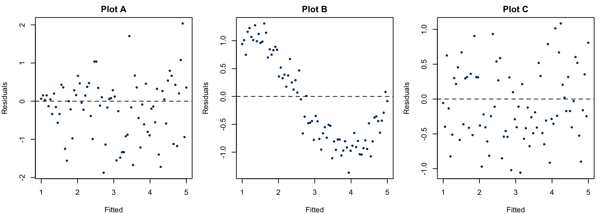
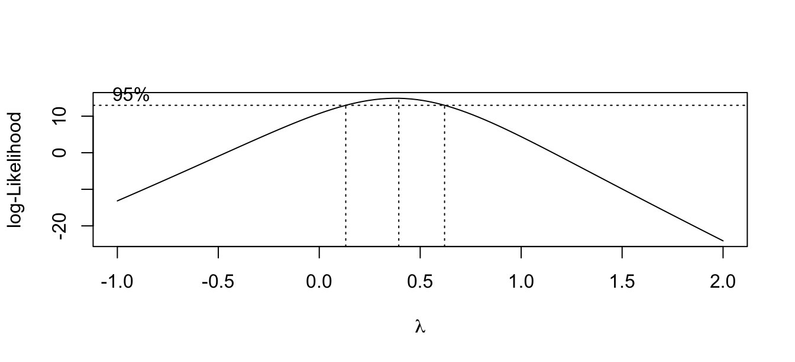

PSTAT 126: Linear Regression
UC Santa Barbara
2026-10-28
By the end of today you will be able to:
Before applying formal tests or transformations, recall the four assumptions of simple linear regression and how we check them:
| Assumption | What it says | How to check |
|---|---|---|
| 1. Linearity | \(E(Y \mid X) = \beta_0 + \beta_1 X\) | Residual vs. fitted plot — no curve |
| 2. Independence | Errors are uncorrelated | Study design / residual vs. order plot |
| 3. Equal variance | \(\text{Var}(\varepsilon_i) = \sigma^2\) (constant) | Residual vs. fitted plot — no fan shape |
| 4. Normality | \(\varepsilon_i \sim N(0, \sigma^2)\) | Normal Q-Q plot — points on line |
Today’s toolkit for when violations are found:
Below are three residual-vs-fitted plots. For each, state which assumption is violated (if any).

(a) Which plot suggests a violation of the equal-variance assumption? What transformation might help?
(b) Which plot suggests a violation of the linearity assumption? What would you try?
(c) Which plot looks ideal?
(a) Plot A — the spread of residuals increases with the fitted value (fan shape), violating equal variance (Assumption 3).
(b) Plot B — a curved trend remains in the residuals after fitting a line, violating linearity (Assumption 1).
(c) Plot C — random scatter around zero with no trend and roughly constant spread. This is the ideal pattern — no obvious violations.
We can transform \(X\) and/or \(Y\) and hope that the linear regression model is adequate for the transformed variables.
Transformations of \(X\) address nonlinearity while leaving error variance roughly unchanged:
| Shape of residual plot | Try |
|---|---|
| Concave up (fast growth) | \(X' = X^2\) or \(X' = e^X\) |
| Concave down (diminishing returns) | \(X' = \log(X)\) or \(X' = \sqrt{X}\) |
| Decreasing, convex | \(X' = 1/X\) or \(X' = e^{-X}\) |
Transformations of \(Y\) address nonconstant variance and/or nonnormality:
\[Y' = \sqrt{Y}, \qquad Y' = \log_{10}(Y), \qquad Y' = 1/Y\]
These are called variance-stabilizing transformations.
Unlike \(X\) transformations, transforming \(Y\) changes the error structure, so it can fix both non-constant variance and non-normality at once.
After fitting the model on \(Y'\), predictions must be back-transformed to the original scale (e.g., \(\widehat{Y} = (\widehat{Y}')^2\) after a square root transformation).
When it’s hard to tell from a residual plot which transformation to use, Box-Cox finds it for you.
The idea: try every power transformation \(Y^\lambda\) for a range of \(\lambda\) values. For each \(\lambda\), fit the regression and measure how well the residuals behave. Pick the \(\lambda\) that gives the best fit.
Reading the output: boxcox() plots a likelihood curve over \(\lambda\). Find the peak, then round to the nearest interpretable value:
| \(\hat\lambda\) | Transformation | Use when |
|---|---|---|
| 1 | none | residuals already look good |
| 0.5 | \(Y' = \sqrt{Y}\) | mild right skew / fan shape |
| 0 | \(Y' = \log Y\) | strong right skew / variance grows with mean |
| −1 | \(Y' = 1/Y\) | severe right skew |
The dashed lines on the plot show the 95% confidence interval for \(\lambda\) — if 1 is inside it, no transformation may be needed.
Under the hood: Box-Cox maximizes the profiled log-likelihood \(\ell_p(\lambda) = -\frac{n}{2}\log\{SSE(\lambda)/n\} + (\lambda-1)\sum \log Y_i\) over \(\lambda\), where \(SSE(\lambda)\) is the residual SS after fitting on \(Y^\lambda\).
The trees dataset records girth, height, and timber volume for 31 black cherry trees. Volume is right-skewed — a natural candidate for transformation.

The peak is near \(\hat\lambda \approx 0.3\) and the 95% CI excludes \(\lambda = 1\), so a transformation is warranted. Since 0 is inside the CI, we use \(Y' = \log(\text{Volume})\) — the nearest interpretable value.
When there are replicated observations (multiple \(Y\) values at the same \(X\)), we can formally test whether the linear model is adequate using the extra sum of squares principle.
Compare two nested models:
Since the full model is more flexible, \(SSE(R) \geq SSE(F)\) always. The extra sum of squares \(SSE(R) - SSE(F)\) quantifies the cost of imposing linearity — it should be small when the linear model is adequate.
\[F^* = \frac{[SSE(R) - SSE(F)] / (df_R - df_F)}{SSE(F)/df_F} \overset{H_0}{\sim} F_{df_R - df_F,\; df_F}\]
Reject \(H_0\) (reject the linear model) if \(F^* > F(1-\alpha;\; df_R - df_F,\; df_F)\).
A group is all observations that share the same \(X\) value. Suppose we measure crop yield (\(Y\), bushels/acre) at three fertilizer doses (\(X\) = 10, 20, 30 g), with two plots at each dose. Each dose is a group.
Full model (one-way ANOVA) — predicts each group’s mean using only the observations in that group, with no connection across groups:
\[X = 10: Y = 15, 19 \;\Rightarrow\; \hat{Y} = 17 \qquad X = 20: Y = 22, 26 \;\Rightarrow\; \hat{Y} = 24 \qquad X = 30: Y = 28, 32 \;\Rightarrow\; \hat{Y} = 30\]
The model makes no claim about the relationship between these means.
Restricted model (linear regression) — forces all group means to fall on a single line \(\beta_0 + \beta_1 X\). The predictions at \(X = 10\), \(20\), and \(30\) are now connected through the same slope and intercept — linearity is assumed.
Key insight: the difference \(SSE(R) - SSE(F) = SSLF\) is entirely due to the linearity constraint.
Denote \(X_1, \ldots, X_c\) as the \(c\) distinct observed values of \(X\).
The full dataset:
\[n_1 \text{ replicates at } X_1: Y_{11}, \ldots, Y_{n_1 1}\] \[n_2 \text{ replicates at } X_2: Y_{12}, \ldots, Y_{n_2 2}\] \[\vdots\] \[n_c \text{ replicates at } X_c: Y_{1c}, \ldots, Y_{n_c c}\]
Total observations: \(n = \sum_{j=1}^c n_j\)
\[SSE(R) = \sum_{i=1}^n (Y_i - \widehat{Y}_i)^2, \qquad df_R = n - 2\]
Each term is the squared gap between one observation and the fitted line. This is the same RSS you already know from linear regression.
\[SSPE = \sum_{j=1}^c \sum_{i=1}^{n_j} (Y_{ij} - \bar{Y}_j)^2, \qquad df_{PE} = n - c\]
Each term is the squared gap between one observation and its group mean.
This captures only natural within-group scatter. It is not referencing the fitted line at all. No matter what shape the true relationship is, SSPE stays the same. That is why it is called pure error.
\[SSLF = \sum_{j=1}^c n_j(\bar{Y}_j - \widehat{Y}_j)^2, \qquad df_{LF} = c - 2\]
Each term is the squared gap between a group mean and the fitted line, weighted by group size.
This captures only the failure of linearity — how far the line misses each group mean. Within-group scatter plays no role. If the line passes through every group mean perfectly, \(SSLF = 0\).
Every observation’s deviation from the line can be split into two pieces:
\[\underbrace{(Y_i - \widehat{Y}_i)}_{\color{#D62728}{\text{obs to fitted line}}} = \underbrace{(Y_i - \bar{Y}_j)}_{\color{#1F77B4}{\text{obs to group mean}}} + \underbrace{(\bar{Y}_j - \widehat{Y}_i)}_{\color{#2CA02C}{\text{group mean to fitted line}}} \qquad \Rightarrow \qquad SSE(R) = SSPE + SSLF\]
| Compares | Captures | |
|---|---|---|
| \(SSE(R)\) | each obs vs. fitted line | total residual error |
| \(SSPE\) | each obs vs. group mean | pure within-group noise |
| \(SSLF\) | each group mean vs. fitted line | failure of linearity |
The F test asks: is SSLF large relative to SSPE, or could it just be noise?
Plugging the SSPE/SSLF decomposition into the extra SS framework gives the lack of fit F test (also called the pure error test):
\[F^* = \frac{SSLF/(c-2)}{SSPE/(n-c)} = \frac{MSLF}{MSPE} \overset{H_0}{\sim} F_{c-2,\; n-c}\]
Reject \(H_0\) (the linear model) when group means stray far from the fitted line relative to within-group noise.
ANOVA table with lack of fit decomposition:
| Source | df | SS | MS | F |
|---|---|---|---|---|
| Model | 1 | SSR | MSR = SSR/1 | MSR/MSE |
| Error | \(n-2\) | SSE | MSE = SSE/\((n-2)\) | |
| — Lack of fit | \(c-2\) | SSLF | MSLF = SSLF/\((c-2)\) | MSLF/MSPE |
| — Pure error | \(n-c\) | SSPE | MSPE = SSPE/\((n-c)\) | |
| Total | \(n-1\) | SSTO |
12 branches of a commercial bank offered gifts for opening money market accounts. The gift value was proportional to the minimum deposit (\(X\), in dollars). The goal: does minimum deposit predict number of new accounts (\(Y\))?
Data: \(c = 6\) distinct deposit sizes (\(75, 100, 125, 150, 175, 200\)), each with \(n_j = 2\) replicates (\(n = 11\); one branch dropped after a fire).
Analysis of Variance Table
Response: y
Df Sum Sq Mean Sq F value Pr(>F)
factor(x) 5 18735 3747.0 16.32 0.004085 **
Residuals 5 1148 229.6
---
Signif. codes: 0 '***' 0.001 '**' 0.01 '*' 0.05 '.' 0.1 ' ' 1Analysis of Variance Table
Response: y
Df Sum Sq Mean Sq F value Pr(>F)
x 1 5141.3 5141.3 3.1389 0.1102
Residuals 9 14741.6 1638.0 Analysis of Variance Table
Model 1: y ~ factor(x)
Model 2: y ~ x
Res.Df RSS Df Sum of Sq F Pr(>F)
1 5 1148
2 9 14742 -4 -13594 14.801 0.005594 **
---
Signif. codes: 0 '***' 0.001 '**' 0.01 '*' 0.05 '.' 0.1 ' ' 1\[F^* = \frac{13593.6/4}{1148/5} = \frac{3398.4}{229.6} = 14.8\]
With \(p = 0.006\), we reject the linear model at \(\alpha = 0.05\). The linear function does not adequately describe the relationship between deposit size and new accounts.
An experiment has \(c = 4\) distinct \(X\) values with \(n_2 = 3\) replicates each (\(n = 12\)). After fitting the linear regression and the full ANOVA model:
(a) Compute \(SSLF\) and its degrees of freedom.
(b) Compute \(MSLF\) and \(MSPE\).
(c) Compute \(F^*\) and state whether you reject the linear model at \(\alpha = 0.05\). Critical value: \(F(0.95;\; 2,\; 8) = 4.46\).
(d) What does this result tell you about Assumption 1?
(a) \(SSLF = SSE(R) - SSE(F) = 480.2 - 120.4 = 359.8\)
\(df_{LF} = c - 2 = 4 - 2 = 2\); \(\quad df_{PE} = n - c = 12 - 4 = 8\)
(b) \[MSLF = \frac{359.8}{2} = 179.9 \qquad MSPE = \frac{120.4}{8} = 15.05\]
(c) \[F^* = \frac{MSLF}{MSPE} = \frac{179.9}{15.05} = 11.95\]
Since \(11.95 > 4.46\), we reject the linear model at \(\alpha = 0.05\).
(d) There is statistically significant evidence that the linear function does not adequately fit the data — Assumption 1 (linearity) appears to be violated. We should consider a transformation or a more flexible model.
A researcher regresses pollution level \(Y\) (ppb) on distance from factory \(X\) (km) using \(n = 40\) observations.
(a) Which assumptions appear violated? Which appears satisfied?
(b) What transformation of \(Y\) would you try first, and why?
(c) After a \(\log(Y)\) transformation, the residual-vs-fitted plot looks ideal. Write the fitted model (in terms of \(\log Y\)) and explain how you would predict \(Y\) for a new \(X = 5\) km.
(a)
(b) Try \(Y' = \log(Y)\). A log transformation is the natural choice for right-skewed data with a fan-pattern (variance growing with the mean), which often arises when \(Y > 0\) and spans several orders of magnitude.
(c) The fitted model after transformation: \(\widehat{\log Y} = \widehat{\beta}_0 + \widehat{\beta}_1 X\).
To predict \(Y\) at \(X = 5\): compute \(\widehat{\log Y}^* = \widehat{\beta}_0 + 5\widehat{\beta}_1\), then back-transform: \(\widehat{Y}^* = e^{\widehat{\log Y}^*}\).
Please put away all materials and take out a pencil and your calculator.
Good luck!
PSTAT 126 — Fall 2026 · UC Santa Barbara